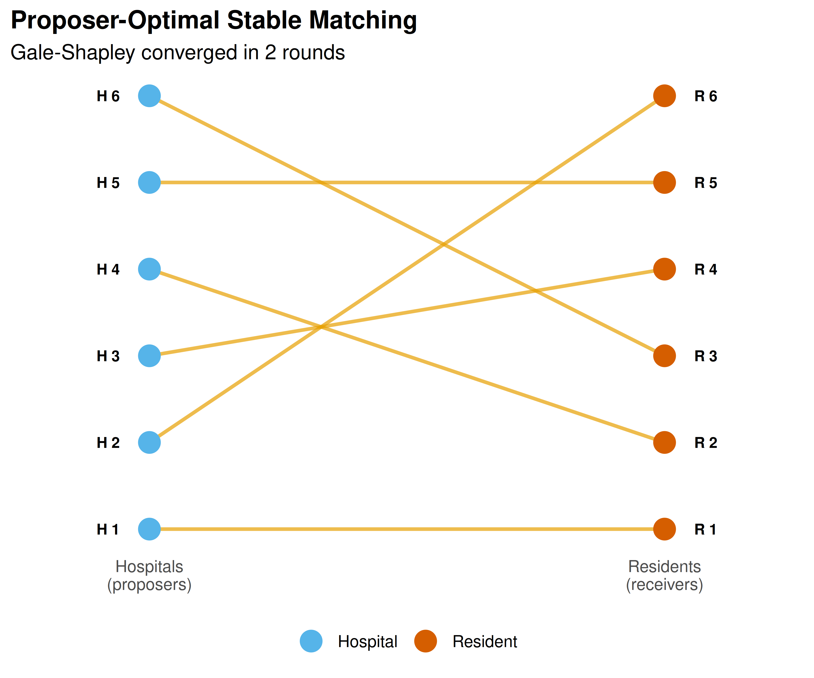
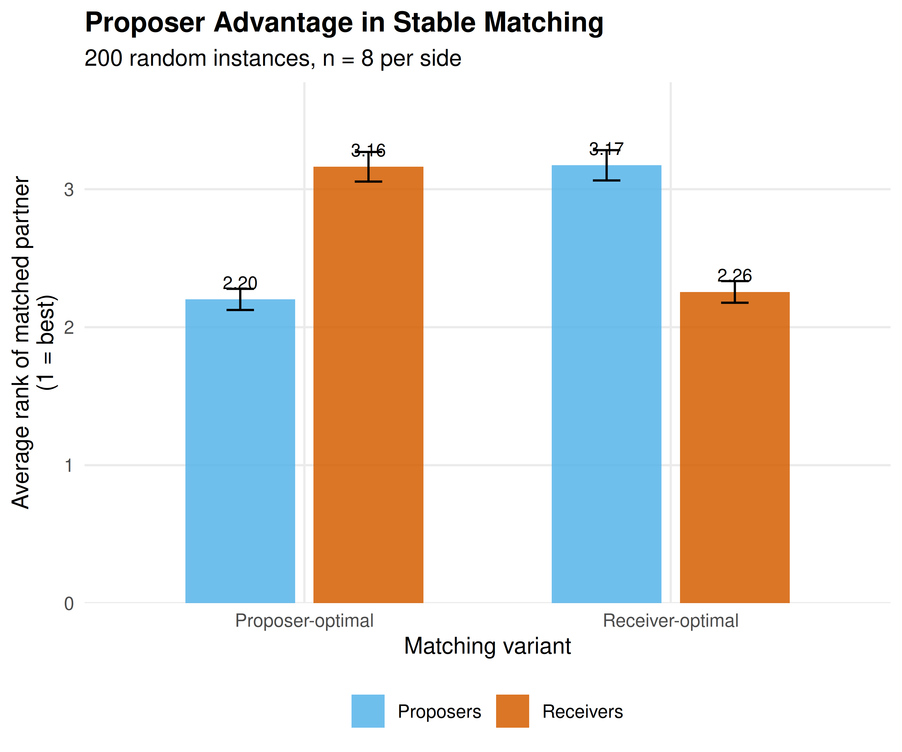

34 Matching Markets
Two-sided matching: stable matching, the Gale-Shapley deferred acceptance algorithm, strategy-proofness, and implementation in R.
Learning objectives
- Define stable matching and explain why unstable matchings unravel.
- Implement the Gale-Shapley deferred acceptance algorithm from scratch in base R.
- Prove that proposer-optimal and receiver-optimal stable matchings are distinct and that the algorithm is strategy-proof for the proposing side.
- Visualize matchings as bipartite graphs and compare welfare across proposer-optimal and receiver-optimal outcomes.
34.1 Motivation
Each year, approximately 40,000 medical school graduates in the United States are matched to residency programs through the National Resident Matching Program (NRMP). The system uses the Gale-Shapley deferred acceptance algorithm, which produces a stable matching — one where no hospital-resident pair would prefer to bypass the system and match with each other directly.
The practical significance of stability was demonstrated when the NRMP switched to a resident-proposing algorithm in 1998 (previously hospital-proposing), improving outcomes for residents. The theoretical foundation for this was laid by Roth (2002), building on the seminal work of Gale and Shapley (1962), which earned Lloyd Shapley and Alvin Roth the 2012 Nobel Prize in Economics.
34.2 Theory
34.2.1 Stable matching
Consider two disjoint sets of equal size \(n\): proposers \(P = \{p_1, \ldots, p_n\}\) and receivers \(R = \{r_1, \ldots, r_n\}\). Each agent has a strict preference ordering over agents on the other side.
Definition: Stable Matching
A matching \(\mu: P \to R\) (a bijection) is stable if there is no blocking pair — a pair \((p_i, r_j)\) where \(p_i\) prefers \(r_j\) to their current match \(\mu(p_i)\) and \(r_j\) prefers \(p_i\) to their current match \(\mu^{-1}(r_j)\).
Stability is the key property that prevents unraveling: if a matching is unstable, some pair has an incentive to deviate, undermining the system.
34.2.2 The Gale-Shapley algorithm
The deferred acceptance algorithm proceeds in rounds:
- Each unmatched proposer proposes to the highest-ranked receiver they have not yet proposed to.
- Each receiver with multiple proposals holds the most preferred and rejects the rest.
- Rejected proposers become unmatched and propose again in the next round.
- The algorithm terminates when every proposer is matched (or has been rejected by all receivers).
Theorem: Gale-Shapley Properties
The Gale-Shapley algorithm always terminates and produces a stable matching. When proposers propose, the result is the proposer-optimal stable matching: every proposer is matched to their best achievable partner across all stable matchings. Simultaneously, it is the receiver-pessimal stable matching.
34.2.3 Strategy-proofness
The Gale-Shapley algorithm is strategy-proof for the proposing side: no proposer can improve their outcome by misreporting preferences. However, receivers can potentially benefit from strategic misreporting — a result with practical implications for the design of matching markets (Roth, 2002).
34.3 Implementation in R
34.3.1 Gale-Shapley algorithm
gale_shapley <- function(proposer_prefs, receiver_prefs)
{
# proposer_prefs: list of length n, each element a vector of receiver indices
# receiver_prefs: list of length n, each element a vector of proposer indices
# Returns: named vector mapping proposer index -> receiver index
n <- length(proposer_prefs)
# Precompute receiver rankings for O(1) comparison
receiver_rank <- matrix(0L, nrow = n, ncol = n)
for (r in seq_len(n)) {
receiver_rank[r, receiver_prefs[[r]]] <- seq_len(n)
}
matched_to <- rep(NA_integer_, n) # proposer -> receiver
held_by <- rep(NA_integer_, n) # receiver -> proposer (current holder)
next_proposal <- rep(1L, n) # which pref to propose to next
free_proposers <- seq_len(n)
rounds <- 0L
while (length(free_proposers) > 0) {
rounds <- rounds + 1L
new_free <- integer(0)
for (p in free_proposers) {
r <- proposer_prefs[[p]][next_proposal[p]]
next_proposal[p] <- next_proposal[p] + 1L
if (is.na(held_by[r])) {
# Receiver is free -- tentatively accept
held_by[r] <- p
matched_to[p] <- r
} else {
current <- held_by[r]
if (receiver_rank[r, p] < receiver_rank[r, current]) {
# Receiver prefers new proposer
held_by[r] <- p
matched_to[p] <- r
matched_to[current] <- NA_integer_
new_free <- c(new_free, current)
} else {
# Receiver keeps current -- proposer stays free
new_free <- c(new_free, p)
}
}
}
free_proposers <- new_free
}
list(matching = matched_to, rounds = rounds)
}34.3.2 Helper: compute welfare
matching_welfare <- function(matching, proposer_prefs, receiver_prefs) {
n <- length(matching)
# Proposer welfare: rank of matched receiver (1 = best)
p_ranks <- vapply(seq_len(n), function(p) {
which(proposer_prefs[[p]] == matching[p])
}, integer(1))
# Receiver welfare: rank of matched proposer (1 = best)
r_ranks <- vapply(seq_len(n), function(r) {
p <- which(matching == r)
which(receiver_prefs[[r]] == p)
}, integer(1))
list(
proposer_ranks = p_ranks,
receiver_ranks = r_ranks,
proposer_mean = mean(p_ranks),
receiver_mean = mean(r_ranks)
)
}34.3.3 Figure 1: Matching visualization
set.seed(42)
n <- 6
# Generate random strict preferences
proposer_prefs <- lapply(seq_len(n), function(i) sample(seq_len(n)))
receiver_prefs <- lapply(seq_len(n), function(i) sample(seq_len(n)))
result <- gale_shapley(proposer_prefs, receiver_prefs)
matching <- result$matching
# Build data for bipartite graph
proposer_nodes <- tibble(
x = 0, y = seq_len(n),
label = paste("H", seq_len(n)),
side = "Hospital"
)
receiver_nodes <- tibble(
x = 1, y = seq_len(n),
label = paste("R", seq_len(n)),
side = "Resident"
)
edges <- tibble(
x = 0, xend = 1,
y = seq_len(n), yend = matching
)
nodes <- bind_rows(proposer_nodes, receiver_nodes)
p_matching <- ggplot() +
geom_segment(data = edges, aes(x = x, xend = xend, y = y, yend = yend),
colour = okabe_ito[1], linewidth = 0.9, alpha = 0.7) +
geom_point(data = nodes, aes(x = x, y = y, colour = side), size = 5) +
geom_text(data = nodes, aes(x = x, y = y, label = label),
size = 2.8, fontface = "bold",
nudge_x = ifelse(nodes$x == 0, -0.08, 0.08)) +
scale_colour_manual(values = okabe_ito[c(2, 6)], name = NULL) +
scale_x_continuous(limits = c(-0.2, 1.2), breaks = c(0, 1),
labels = c("Hospitals\n(proposers)",
"Residents\n(receivers)")) +
scale_y_continuous(breaks = NULL) +
labs(title = "Proposer-Optimal Stable Matching",
subtitle = glue("Gale-Shapley converged in {result$rounds} rounds"),
x = NULL, y = NULL) +
theme_publication() +
theme(panel.grid.major = element_blank(),
axis.text.y = element_blank())
p_matching
Figure 34.1: Bipartite graph of the proposer-optimal stable matching for 6 hospitals and 6 residents. Left nodes are hospitals (proposers), right nodes are residents (receivers), and line segments connect matched pairs.
save_pub_fig(p_matching, "matching-bipartite", width = 6, height = 5)34.3.4 Figure 2: Proposer advantage
set.seed(42)
n <- 8
n_instances <- 200
welfare_data <- map_dfr(seq_len(n_instances), function(sim_id) {
p_prefs <- lapply(seq_len(n), function(i) sample(seq_len(n)))
r_prefs <- lapply(seq_len(n), function(i) sample(seq_len(n)))
# Proposer-optimal: proposers propose
po <- gale_shapley(p_prefs, r_prefs)
w_po <- matching_welfare(po$matching, p_prefs, r_prefs)
# Receiver-optimal: receivers propose (swap roles)
ro <- gale_shapley(r_prefs, p_prefs)
# ro$matching maps receiver -> proposer, invert for welfare
ro_matching <- integer(n)
for (r in seq_len(n)) ro_matching[ro$matching[r]] <- r
w_ro <- matching_welfare(ro_matching, p_prefs, r_prefs)
tibble(
sim_id = sim_id,
side = rep(c("Proposers", "Receivers"), 2),
variant = rep(c("Proposer-optimal", "Receiver-optimal"), each = 2),
mean_rank = c(w_po$proposer_mean, w_po$receiver_mean,
w_ro$proposer_mean, w_ro$receiver_mean)
)
})
welfare_summary <- welfare_data |>
group_by(side, variant) |>
summarise(avg_rank = mean(mean_rank),
se_rank = sd(mean_rank) / sqrt(n()),
.groups = "drop")
p_advantage <- ggplot(welfare_summary,
aes(x = variant, y = avg_rank, fill = side)) +
geom_col(position = position_dodge(width = 0.7), width = 0.6, alpha = 0.85) +
geom_errorbar(aes(ymin = avg_rank - 1.96 * se_rank,
ymax = avg_rank + 1.96 * se_rank),
position = position_dodge(width = 0.7), width = 0.15) +
geom_text(aes(label = sprintf("%.2f", avg_rank)),
position = position_dodge(width = 0.7), vjust = -0.8, size = 3) +
scale_fill_manual(values = okabe_ito[c(2, 6)], name = NULL) +
scale_y_continuous(name = "Average rank of matched partner\n(1 = best)",
expand = expansion(mult = c(0, 0.15))) +
labs(x = "Matching variant",
title = "Proposer Advantage in Stable Matching",
subtitle = glue("{n_instances} random instances, n = {n} per side")) +
theme_publication()
p_advantage
Figure 34.2: Average rank of matched partner under proposer-optimal and receiver-optimal stable matchings across 200 random instances. Proposers obtain significantly better matches when they propose, confirming the structural advantage of the proposing side.
save_pub_fig(p_advantage, "matching-proposer-advantage", width = 6, height = 5)34.4 Worked example
We trace the Gale-Shapley algorithm step by step for 5 hospitals and 5 residents.
n <- 5
hospital_names <- paste("H", 1:n, sep = "")
resident_names <- paste("R", 1:n, sep = "")
# Fixed preferences for reproducibility
h_prefs <- list(
c(2, 3, 1, 5, 4), # H1 prefers R2 > R3 > R1 > R5 > R4
c(1, 3, 5, 2, 4), # H2 prefers R1 > R3 > R5 > R2 > R4
c(1, 2, 4, 5, 3), # H3 prefers R1 > R2 > R4 > R5 > R3
c(3, 1, 2, 4, 5), # H4 prefers R3 > R1 > R2 > R4 > R5
c(2, 4, 1, 3, 5) # H5 prefers R2 > R4 > R1 > R3 > R5
)
r_prefs <- list(
c(3, 1, 4, 2, 5), # R1 prefers H3 > H1 > H4 > H2 > H5
c(1, 5, 2, 3, 4), # R2 prefers H1 > H5 > H2 > H3 > H4
c(4, 2, 1, 3, 5), # R3 prefers H4 > H2 > H1 > H3 > H5
c(3, 5, 1, 2, 4), # R4 prefers H3 > H5 > H1 > H2 > H4
c(1, 2, 3, 5, 4) # R5 prefers H1 > H2 > H3 > H5 > H4
)
cat("Hospital preferences (most to least preferred resident):\n")#> Hospital preferences (most to least preferred resident):
for (h in 1:n) {
cat(sprintf(" %s: %s\n", hospital_names[h],
paste(resident_names[h_prefs[[h]]], collapse = " > ")))
}#> H1: R2 > R3 > R1 > R5 > R4
#> H2: R1 > R3 > R5 > R2 > R4
#> H3: R1 > R2 > R4 > R5 > R3
#> H4: R3 > R1 > R2 > R4 > R5
#> H5: R2 > R4 > R1 > R3 > R5
cat("\nResident preferences (most to least preferred hospital):\n")#>
#> Resident preferences (most to least preferred hospital):
for (r in 1:n) {
cat(sprintf(" %s: %s\n", resident_names[r],
paste(hospital_names[r_prefs[[r]]], collapse = " > ")))
}#> R1: H3 > H1 > H4 > H2 > H5
#> R2: H1 > H5 > H2 > H3 > H4
#> R3: H4 > H2 > H1 > H3 > H5
#> R4: H3 > H5 > H1 > H2 > H4
#> R5: H1 > H2 > H3 > H5 > H4
# Run hospital-proposing Gale-Shapley
result <- gale_shapley(h_prefs, r_prefs)
cat(sprintf("\nHospital-proposing Gale-Shapley (converged in %d rounds):\n",
result$rounds))#>
#> Hospital-proposing Gale-Shapley (converged in 3 rounds):
for (h in 1:n) {
cat(sprintf(" %s --> %s\n", hospital_names[h],
resident_names[result$matching[h]]))
}#> H1 --> R2
#> H2 --> R5
#> H3 --> R1
#> H4 --> R3
#> H5 --> R4
# Verify stability
w <- matching_welfare(result$matching, h_prefs, r_prefs)
cat(sprintf("\nMean hospital rank of match: %.1f (of %d)\n",
w$proposer_mean, n))#>
#> Mean hospital rank of match: 1.6 (of 5)#> Mean resident rank of match: 1.4 (of 5)
# Run resident-proposing version
result_rp <- gale_shapley(r_prefs, h_prefs)
rp_matching <- integer(n)
for (r in 1:n) rp_matching[result_rp$matching[r]] <- r
cat(sprintf("\nResident-proposing Gale-Shapley:\n"))#>
#> Resident-proposing Gale-Shapley:#> H1 --> R2
#> H2 --> R5
#> H3 --> R1
#> H4 --> R3
#> H5 --> R4
w_rp <- matching_welfare(rp_matching, h_prefs, r_prefs)
cat(sprintf("\nMean hospital rank of match: %.1f\n", w_rp$proposer_mean))#>
#> Mean hospital rank of match: 1.6#> Mean resident rank of match: 1.4The hospital-proposing version yields better outcomes for hospitals (lower mean rank of match), while the resident-proposing version favours residents. This asymmetry motivated the NRMP’s switch to a resident-proposing algorithm in 1998 — a change that improved resident welfare without sacrificing stability.
34.5 Extensions
- Many-to-one matching generalizes the model to settings where each hospital has multiple positions. The algorithm extends naturally, with hospitals holding a quota of proposals.
- Kidney exchange (Roth (2002)) applies matching theory to organ donation, where patients with incompatible donors can swap. Top trading cycles and chains extend the stable matching framework.
- School choice uses deferred acceptance to assign students to public schools (Boston, New York City), balancing family preferences with school priorities.
- Matching with contracts (Roth, 2002) unifies many-to-one matching and auction theory into a single framework, with applications to military cadet branching and supply chains.
Exercises
Uniqueness. Construct a 3-by-3 matching instance where the proposer-optimal and receiver-optimal stable matchings are identical — meaning there is a unique stable matching. Verify your example by running
gale_shapley()with both sides proposing. What structural property of the preference lists guarantees uniqueness?Strategic manipulation. Using the 5-by-5 worked example, suppose Resident 1 misreports their preferences as \(H_1 > H_3 > H_4 > H_2 > H_5\) (promoting \(H_1\) to first choice). Run the hospital-proposing Gale-Shapley with this manipulated preference list. Does Resident 1 get a better or worse outcome? Explain why the algorithm is not strategy-proof for the receiving side.
Scaling behaviour. Run the Gale-Shapley algorithm for \(n \in \{10, 50, 100, 500, 1000\}\) with random preferences (50 instances each). Record the number of rounds until convergence and plot it against \(n\). What is the empirical relationship? Compare to the theoretical bound of \(O(n^2)\).
Solutions appear in D.